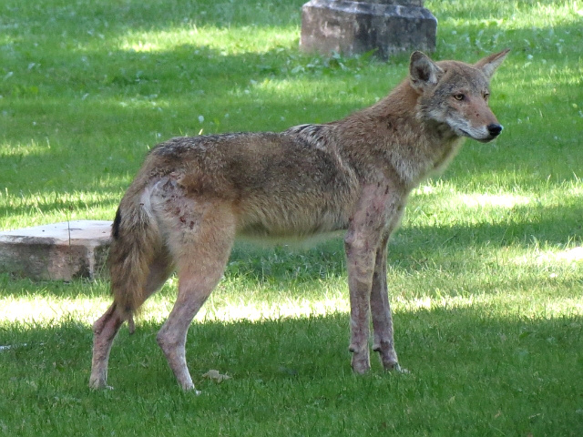

Wildlife in Toronto

Toronto's wildlife is incredibly diverse, with thousands of unique species calling this city home.
The city's parks, ravines, and waterfront areas provide habitats for various species including coyotes, foxes, raccoons, deer, skunks, and more than 300 species of birds.
While it's very normal to encounter wild animals in the city, it's important to keep a safe distance as they can bite, scratch or potentially transmit diseases.
Wildlife Centre

Toronto does have a Wildlife Centre that provides medical care and rehabilitation to sick, injured, and orphaned wild animals.
This facility plays a crucial role in the conservation of local wildlife, offering a safe haven for animals ranging from birds and mammals to reptiles.
The center not only treats injuries and illnesses but also educates the public about wildlife protection and coexistence.
Through various programs, volunteers and staff work tirelessly to rehabilitate animals and release them back into their natural habitats whenever possible.
The Wildlife Centre emphasizes the importance of respecting urban wildlife and fosters a deeper understanding of the challenges these animals face in an urban environment.